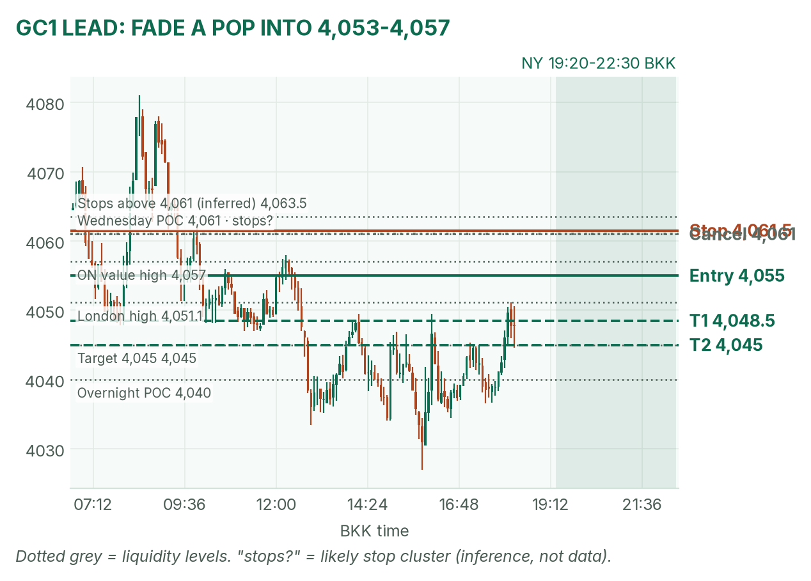
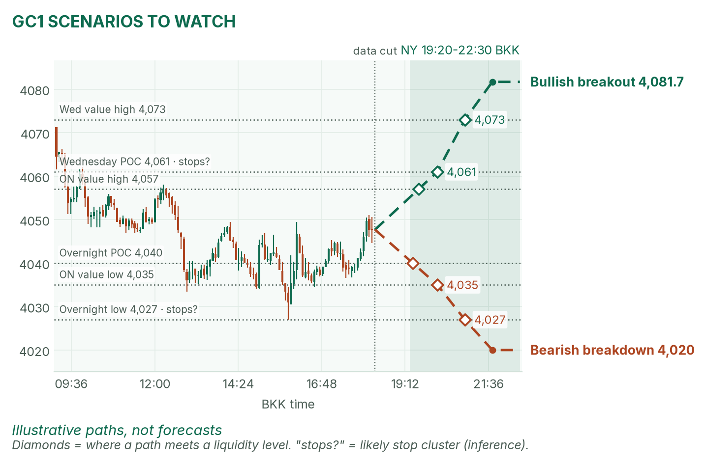
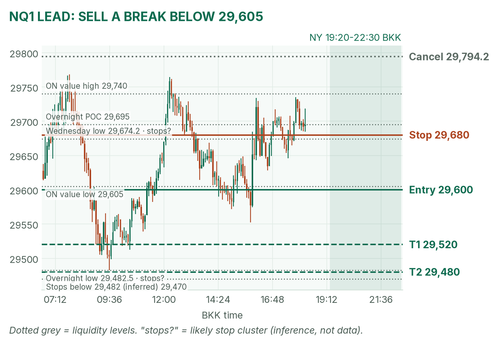
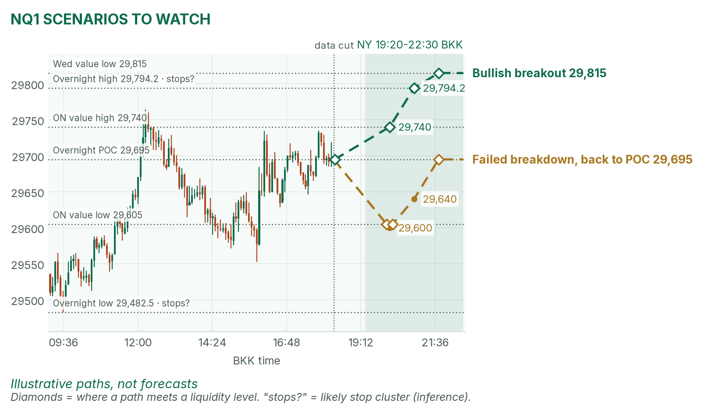

Data morning. Gold bounced into old value; Nasdaq sits on its busiest price after Alphabet.
Window 19:20–22:30 BKK. Data cut 18:20 BKK: GC 4,047.7, NQ 29,694.5 (TopstepX Z26, last complete 5m bar). Levels only. Ideas, not advice.
Summary
GC: fade a failed pop into 4,053–4,057. Stop 4,061.5, target 4,045 (1.5R). About 37%.
NQ: sell a 5m close below 29,605, the overnight value low. Stop 29,680, target 29,480 (1.5R). About 35%.
GDP, core PCE and jobless claims all print at 19:30, then the ECB at 20:15 and 20:45. No entries 19:25–19:32, 20:10–20:17 or 20:40–20:47.
Flat by 22:30, no matter what.
The market story
Gold opened Asia at 4,081 and fell to 4,027 at 15:50, then bounced to 4,051 in London. It now sits inside Wednesday's range but under Wednesday's POC (the price where the most contracts traded), 4,061. Nasdaq futures dropped about 300 points after Alphabet's results: the stock is down 10.8% premarket; Microsoft is up 1.9%. NQ has climbed back to its overnight POC, 29,695.
Interest rates eased a little: the 10-year yield is 5.005%, down 4 basis points (a basis point is 0.01%). Lower rates usually help gold, because holding it costs less in lost interest, yet gold still fell. That tells me sellers are in charge for now.
How I read it: gold is bouncing inside a down day, so I sell its pops. Nasdaq is balanced on its POC, so I wait for a break and trade its direction.
News (BKK)
Time
Event
Forecast
Prior
Read
19:30
US GDP Q3 (advance, annualised)
3.2%
1.5%
Hot keeps rates high: bad for gold and NQ.
19:30
US core PCE, Sep (m/m)
0.3%
0.2%
The Fed's main inflation gauge. 0.4% or more is hot.
19:30
US jobless claims
198K
194K
Above about 210K is cold (weaker jobs).
20:15 / 20:45
ECB decision, Lagarde press conference
2.65%
2.65%
Hold expected. Moves 6E most.
No-trade zones: 19:25–19:32, 20:10–20:17 and 20:40–20:47.
Levels to watch
Level
GC
NQ
Wednesday high / low
4,097.2 / 4,036.9
30,178 / 29,674.25
Wednesday POC
4,061
29,840
Overnight high
4,081.7
29,794.25
Overnight value area (where 70% of volume traded)
4,035–4,057
29,605–29,740
Overnight POC
4,040
29,695
Overnight low
4,027
29,482.5
Typical window range (median / 80th pct, 20 days)
39 / 51 pts
302 / 413 pts
Gold (GC1)
Bias: bearish. Lower highs since Wednesday. My NY gold rule takes the COMEX opening range from 19:20 and fades its edges back toward the POC.
The trade: fade a failed pop
Entry
4,053–4,057 (plan 4,055): a pop that closes back below it on 5 minutes, after the COMEX range sets and after 19:32
Stop
4,061.5: above Wednesday's POC (4,061), where buy stops likely sit (inference)
Targets
1R partial 4,048.5 · full target 4,045 (1.5R), on the way to the overnight POC at 4,040
Cancel
A 5m close above 4,061 before entry, or no entry by 21:30
Probability
~37%, an estimate. Basis: NY gold opening ranges mostly failed in my Aug–Oct study (not significant); the stop is 1.6 five-minute ATRs (average bar size, 4.0 pts).
Why: sell the top of overnight value, under Wednesday's POC. No pop, no trade. GDP can jump either way, so I wait until 19:32. April's NY brief isn't out yet, so no brief check. VWAP (volume-weighted average price) is a filter only after 19:50.

GC 5m bars to 18:20 BKK, window shaded. London's bounce stalled at 4,051.

Illustrative paths, not forecasts: the other two setups at liquidity levels (prices where resting orders likely cluster).
Scenarios to watch
Bullish breakout: two 5m closes above 4,061. Aims for 4,073 (Wednesday value high), then 4,081.7.
Bearish breakdown: a 15m close below 4,035 (value low). Aims for 4,027, then 4,020.
Nasdaq (NQ1)
Bias: bearish lean. Alphabet knocked it down overnight and the bounce stalled under 29,740. My NQ rule trades breaks of the fixed 5-minute range after the 20:30 stock open.
The trade: bearish breakdown
Entry
29,600 on a 5m close below 29,605 (value low) and the 20:30–20:35 range low, after 20:47
Stop
29,680: back above Wednesday's low (29,674.25)
Targets
1R partial 29,520 · full target 29,480 (1.5R), just under the overnight low, where sell stops likely sit (inference)
Cancel
NQ trades 29,794.25 (overnight high) before entry, or no break by 22:00
Probability
~35%, an estimate. Basis: NQ 5-minute range breakouts averaged +0.37R in my study (31 sessions, not significant); 120 points to target is about 40% of a typical window.
Why: a break below value after a selloff tends to revisit the low. If it snaps back above 29,605 fast, I'm out and I don't re-enter. No brief check today.

NQ 5m bars to 18:20 BKK, window shaded. The trigger sits at the overnight value low.

Illustrative paths, not forecasts: breakout and failed breakdown.
Scenarios to watch
Bullish breakout: a 5m close above 29,740 and the opening range high. Aims for 29,794.25, then 29,815.
Failed breakdown: a poke below 29,605 that closes back above within 15 minutes. Aims for 29,695 (POC).
6E (not traded in NY): 1.1170, off the 16:25 low of 1.11445. London's short closed flat at window end (−0.62R); the ECB lands at 20:15.
Before you click
ORB bases. GC NY: COMEX 19:20 range, ends at the first candle under half the average volume of the first two, fade to POC. NQ: fixed 5-minute range after 20:30, trade breakouts.
Checklist. 1) Room to today's max loss? 2) Within daily rules? 3) No release within 30 minutes? 4) Agrees with the bias? 5) At a marked level? 6) Setup tagged? 7) Entry, stop, 1R partial, target set? 8) Calm, not chasing?
Reset (60 seconds). Breathe in 4, hold 4, out 6, five times. Name the feeling in one word. "Eager"? Wait 5 minutes.
TopstepX Z26 bars, read-only; overnight starts 05:00 BKK. Yields and premarket stocks: April's 18:20 BKK pulls (CNBC). Calendar: Il Sole 24 Ore Radiocor, Kinzan, BEA.